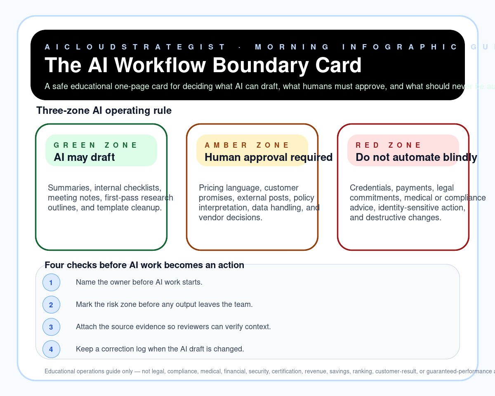

Morning publication · safe AI operations
The AI Workflow Boundary Card
A safe educational one-page card for deciding what AI can draft, what humans must approve, and what should never be automated blindly.

Three-zone rule
- Green — AI may draft: Summaries, internal checklists, meeting notes, first-pass research outlines, and template cleanup.
- Amber — Human approval required: Pricing language, customer promises, external posts, policy interpretation, data handling, and vendor decisions.
- Red — Do not automate blindly: Credentials, payments, legal commitments, medical or compliance advice, identity-sensitive action, and destructive changes.
Review checks
- Name the owner before AI work starts.
- Mark the risk zone before any output leaves the team.
- Attach the source evidence so reviewers can verify context.
- Keep a correction log when the AI draft is changed.
Truth boundary
Educational operations guide only — not legal, compliance, medical, financial, security, certification, revenue, savings, ranking, customer-result, or guaranteed-performance advice.
Need a practical review?
If your team is using AI in sales, operations, healthcare workflows, cloud systems, or customer follow-up, contact AICloudStrategist for a free review before automating risky steps.